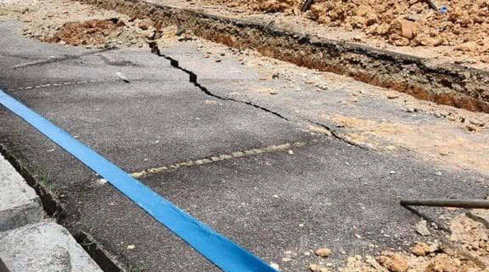

Underground pipe leakage
An underground water pipe leak traced and resolved, protecting the building's funds.

An underground water pipe leak is one of the harder faults to catch. There is often nothing visible above ground until the loss is substantial — the water simply drains away, and the building keeps paying for it on every bill.
Approach
The work was to identify the leak, get it excavated and repaired, and coordinate the contractors and the stakeholders through to completion — the same technical and non-technical troubleshooting that day-to-day building management runs on.


The leak was resolved and the loss to the JMB/MC's funds was stopped.
Why it mattered
A continuing leak is charged to the building month after month, drawn from the funds the owners contribute. Finding it is what stops the loss.